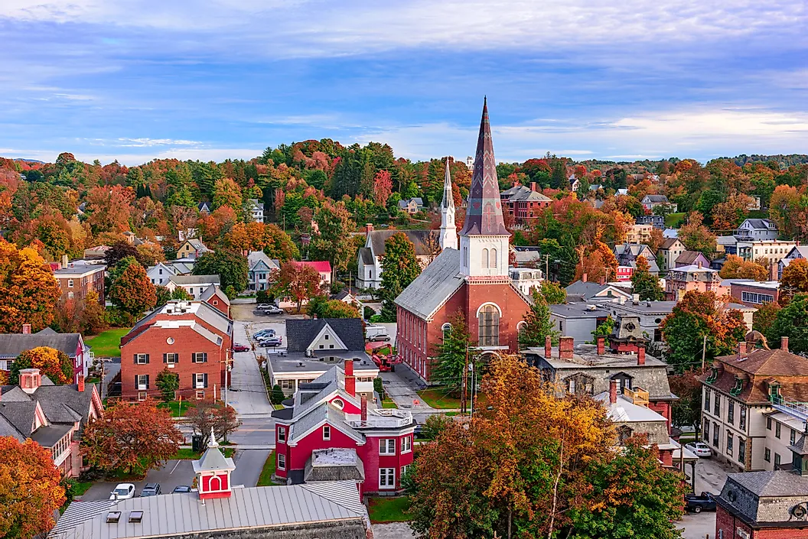
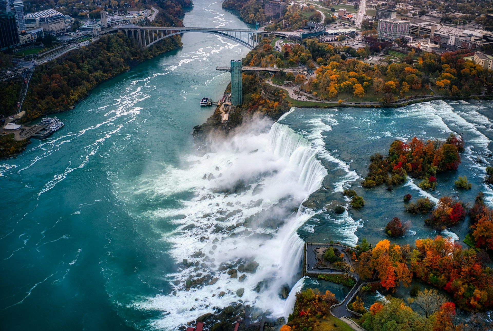

Travel diaries
Yellowstone Park

Yellowstone has a large mound of multi-colored Travertine
Mammoth Hot Springs has a number of actively forming Travertine terraces
Photo Gallery


Vermont
Vermont, located in the northeastern United States, is a state renowned for its natural beauty and charm. It is known for its breathtaking mountain ranges, serene lakes, dense forests, and captivating rural landscapes. The Green Mountain National Forest covers much of the state, offering abundant outdoor activities and adventure opportunities. In winter, skiers flock here to enjoy snow-covered slopes, while summer beckons hikers, cyclists, and campers to explore its pristine wilderness. Furthermore, Vermont boasts picturesque small towns with a countryside vibe and a unique farming landscape, making it a destination where rural charm thrives. Whether you're seeking the beauty of nature or embracing a tranquil way of life, Vermont is a place worth visiting.
Vermont is celebrated not only for its natural beauty but also for its distinctive culture and historical heritage. The state, as the 14th to join the United States, is considered one of the birthplaces of the American Revolution, and as a result, it is rich in historical landmarks and monuments.
Niagara Falls
Niagara Falls is located on the border between Canada and the United States. Connecting Lake Erie and Lake Ontario, Niagara Falls has the highest flow rate of any waterfall in North America.
Niagara Falls draws in thousands of visitors every year, and for good reason. As such, there are numerous things that you can see while you visit the falls, and it is very easy to make a full trip out of seeing this wonderful sight.